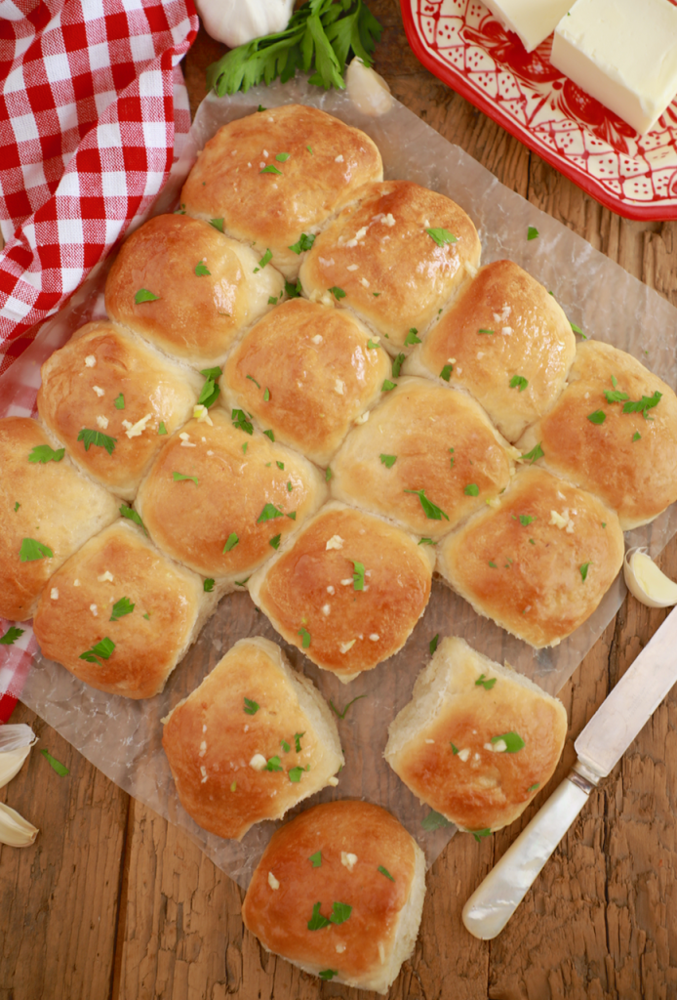

One Hour Dinner Rolls

Description
These pillowy soft, delicious dinner rolls are super fast and easy to make.
Ingredients
- 4 cups (1 lb 4oz/568g) all-purpose flour
- 1 tablespoon instant yeast
- 2 tablespoons sugar
- 1 teaspoon salt
- 2 tablespoons (1oz/28g) butter, softened
- 1 1/2 cups (12floz/355ml) warm water or 1/2 and 1/2 milk and water
Topping
- 3 tablespoons (1 1/2oz/ 43g) butter, room temperature
- 2 cloves garlic, finely minced
- 1 tablespoon parsley, dried
Steps
- In the bowl of a stand mixer fitted with the dough hook, add the flour, yeast, sugar and salt. Mix to combine.
- Add in the softened butter and mix on low speed until the butter breaks up into large breadcrumbs.
- While still mixing, slowly stream in the water. (Note: add enough water all for your dough to form a tight ball and clean the bottom of the bowl. You might not need all the liquid)
- Increase the speed to medium and knead until the dough is smooth and elastic, about 6-8 minutes.
- Transfer the dough into a lightly greased large bowl and cover tightly with cling wrap and a dish towel. Let the dough rise in a warm place until doubled in volume, about 20 minutes.
- Turn the dough out onto a lightly floured surface and form it into an even ball. Using a dough cutter or knife, cut the dough in half. Roll each half of the dough into a long log. Cut each log into 8 rolls. Roll each one into the shape of a ball.
- Line a baking tray with parchment paper. Place each rolled piece of dough about 1 centimeter apart.
- Cover the rolls with cling wrap and allow to rise again while your oven is preheating to 400°F (200°C). This will take around 20 minutes.
- While the rolls are rising, mix together the melted butter, minced garlic and dried parsley in a small bowl. Set aside.
- When the rolls have risen for the second time and joined together, lightly brush the rolls with half of the melted garlic butter (reserve the other half for after they are baked).
- Bake until golden brown, roughly brown, roughly 18-22 minutes. Immediately after removing the rolls from the oven, brush them with the remaining melted garlic butter.
- After cooling slightly pull apart and serve. Cover remaining rolls and store at room temperature for up to 2-3 days. They also freeze really well.